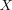
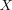

associativity of subspace topology
1. Proposition
Let  be a topological space and subsets.
Let be the subspace
be a topological space and subsets.
Let be the subspace  of the subspace topology of
of the subspace topology of  and the subspace of of 
Then
and the subspace of of 
Then
2. Proof
Nach Charakterisierung der Unterraumtopologie als Initialtopologie für die Inklusionsabbildung sei:
So ist eine Abbildung stetig g.d.w. stetig ist und ist stetig, g.d.w. stetig ist. Da gilt, ist somit auch , da die Initialtopologie eindeutig bis auf isomorphie ist.